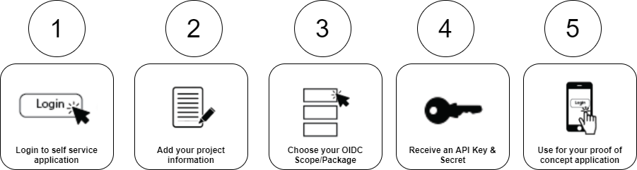

The BC Services Card is a government issued ID that can be used to log in to participating services online when it is paired with your mobile device. The BC Services Card provides a high identity assurance level which gives your public agency clients the confidence that the person trying to access their online service is who they say they are.
Find out more about the BC Services CardsThis BC Services Card self-service implementation is available for organizations that fall within the BC Broader Public Sector (BPS), other user types are not supported at this time.
Find out more about who can use this siteThe application uses a two-stepped approach where the BPS teams can experiment with an integration in our test environment, using fictious BC Services Card data as a test and then, when they are ready, prepare and submit their materials to create a live integration with real citizen BC Services Cards.
Find out more about the process
This application gives developers the ability to quickly prototype their integration with the BC Services Card before migrating into a more rigorous production environment
Find out more about the technical details necessary to integrate with the BC Services Card